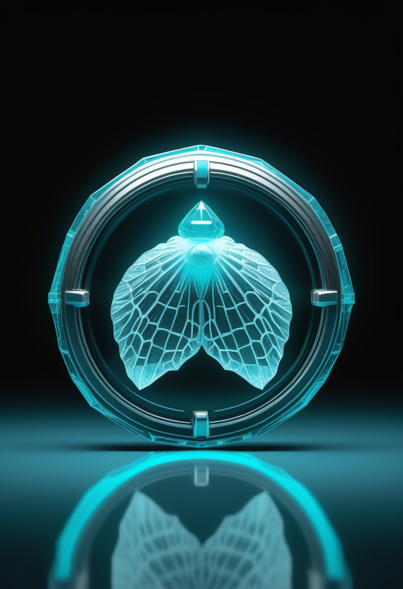
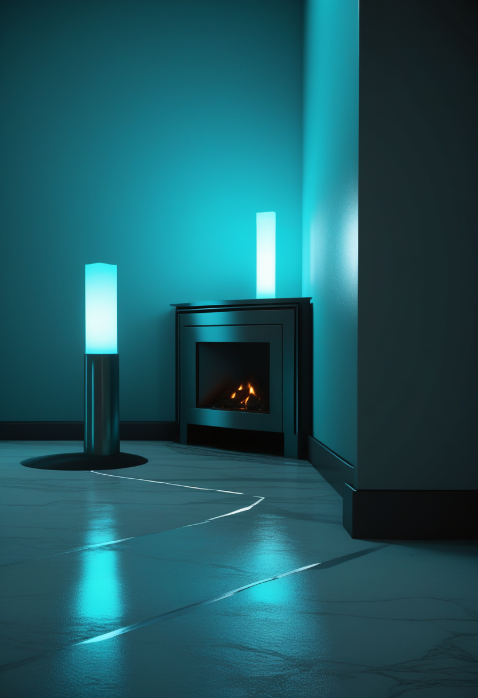
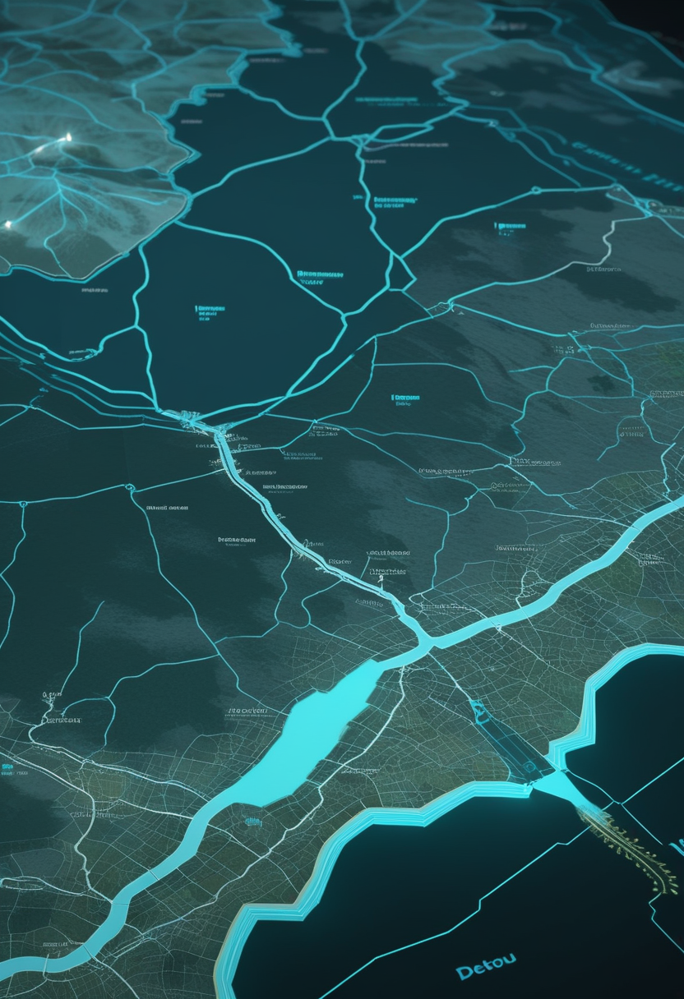

FDAがゾルゲンスマと腫瘍の関係を正式に調査。中国は非侵襲型BCIの臨床研究を全国初届け出、NASAのSwift天文台は22年の観測を終えて大気圏に還った。
11/8号で『FDAが調査を始めたとの報道は1社のみで未確認』としていたが、今号でロイター通信の報道(11/6〜7)により確認できた。米食品医薬品局(FDA)は、ノバルティスのSMA遺伝子治療薬ゾルゲンスマと、腫瘍(悪性を含む)の発生との関係を調べていると発表した。ノバルティスは2019年の承認以来、治療後の腫瘍の報告を計9件受けており、うち2件ではウイルスベクターのDNAが患者の遺伝子に組み込まれた証拠があるという。FDAは、ゾルゲンスマと、同じ有効成分を使う髄注版Itvismaのどちらも『承認された使い方では、全体として利益が起こりうるリスクを上回る』としつつ、規制上の措置が必要かどうかを評価中と説明。治療を受けた患者と治験参加者には、腫瘍ができていないかの経過観察を勧めた。製品の回収や使用中止の指示は出ていない。話題は『会社の報告』から『規制当局の正式な評価』の段階に進んだ。

今日の一本の詳細。米FDAは、ゾルゲンスマ治療後に計9件報告された腫瘍(2件でAAV9ベクターDNAの組み込みの証拠)について、同じ有効成分を2倍濃縮した髄注版Itvisma(2歳以上向け)も含めて正式に調査していると発表した(ロイター、11/6〜7報道)。ノバルティスは、両方の症例を当局に適切な時期に報告済みで、腫瘍のリスクは添付文書にすでに記載していると説明。欧州医薬品庁(EMA)はロイターの取材に回答していない。SMA患者団体は情報公開の遅さを批判し、年齢・腫瘍の種類・発生時期など詳しい情報を求めている。
ゾルゲンスマは『会社の報告』から『規制当局の正式な評価』の段階に進んだ。治療を受けた家族は、主治医と経過観察の計画を確認したい。次の焦点はFDAの評価結果。
報道によると、天津大学の脳機交互・人机共融海河実験室の研究が11/5、国家衛生健康委員会の『生物医学新技術』臨床研究の届け出を完了した。2026年5月に施行された新しい管理条例の下で、非侵襲型(頭に埋め込まない)BCIの臨床研究としては全国で初めてという。対象は慢性期の脳卒中で足の運動に障害がある患者。同実験室は9月末にも非侵襲の超小型BCI『神工・須弥・脳立方』(重さ3g)を発表しており、製品開発と並行して臨床研究の制度面も進めている。杭州網(11/5)は、浙江省で2026年7月に網膜を経由する視覚BCIの国内初の埋め込み手術が行われたことなど、BCIが病棟に入りつつある様子を伝えている。

埋め込み型BCIを手がける米Paradromicsは10/26、FDAが『施設から車で4時間以内』という居住条件を外し、会話回復をめざす試験Connect-Oneで全米から参加者を検討できるようになったと伝えられた。装着型(手術なし)のBCIでは、米Cognixionが11/4、NIH資金によるALSの人向け会話装置の試験で参加者の登録を始めたと発表(11/5号・11/7号既報)。全米で成人30人を対象に自宅で行い、参加費用はかからない(詳細は要確認)。手術が必要な侵襲型と、自宅でできる装着型それぞれで、参加のしやすさを広げる動きが同時に進んでいる。
視線で操作する会話装置で知られるスウェーデンのDynavox Group(旧Tobii Dynavox)は10/21、第3四半期決算を発表した。社長はインタビューで、2026年は米国の保険制度に関わる事務手続きが増えたと説明し、為替の影響を除いた今年の成長率は15%と、長期目標の平均20%を下回っていると述べた。同社は7月に独EIYottとRehadapt Engineeringを1,500万ユーロで買収することで合意している。視線入力の新しい製品や臨床試験の発表は確認できなかった。
中国は『制度に乗せた臨床研究』、米国は『参加しやすさ』の拡大が進んだ週。視線入力は技術より保険の手続きが普及のボトルネックになっている。

米疾病対策センター(CDC)の11/6更新では、11/4時点で流行全体(ウガンダを含む)の確定例は10,772例、確定死者は5,234人。うちコンゴ民主共和国(DRC)が10,741例・5,230人を占める(11/8号既報の数字から小幅増)。DRC保健省の数字(11/3までのデータ)は確定10,668例・死者5,198人で、集計日のずれにより機関ごとに数字が少し違う。WHOは、8つの州にまたがる67の保健区域のうち51区域で感染が続いているとし、ウイルスの種類を問わずDRCで記録された最大のエボラ流行と位置づけている。
バングラデシュ保健省のデータによると、2026年1月1日〜10月30日のデング熱による死者は累計418人、入院は13万3千人を超えた。10月単月の死者は173人で、9月の148人を上回り2026年で最も多い月となった。ダッカのシャヒード・スフラワルディ医科大学病院では常時279人のデング患者を治療しており、1日で67人が新たに入院する日もあったという。昆虫学者は、10月のペースで死者が増え続けることはなさそうだが、11月も感染は高い水準で続くとみている。WHO南東アジア地域事務局(SEARO)の11/4付の報告書も、週ごとの患者数が2022・2024・2025年の同時期より多いと伝えている。
エボラはDRCで『史上最大』の規模に達し、デング熱はバングラデシュで最悪の月を記録した。どちらも増加のペースはやや落ち着きつつある。
ガンマ線バースト(宇宙最大級の爆発)の観測で活躍したNASAのニール・ゲーレルス・スウィフト天文台が11/4、米東部時間午前7時39分ごろ、インドネシア北スマトラ上空で大気圏に再突入した(米宇宙軍が確認)。自前の推進装置がなく、7月に民間企業Katalyst Spaceが試みた軌道を上げる救出も成功しなかった。最後の科学観測は10/20、運用終了は10/23。NASAは地上の人に被害が出る確率を約2,100分の1と見積もっていた。2004年の打ち上げ以来22年間、突発的な天体現象を捉え続けた望遠鏡の退場で、高エネルギー天文学には観測の『穴』が生じる。
10/31の第7回有人宇宙飛行学術大会で、中国の有人月探査計画の担当者が着陸方式を説明した。2基のロケットで月面着陸機『攬月(ランユエ)』と有人宇宙船『夢舟(モンジョウ)』を別々に月へ向かう軌道に送り、月を回る軌道でドッキングさせる。中国は2030年までの有人月面着陸を目標にしている(先駆けとなる無人探査機『嫦娥7号』は8月に打ち上げ済み)。今月はESAのEuclidの最初の大型データ公開(11/12予定、暫定)とHeraのディモルフォス詳細画像(11/25予定)も続く予定。
Swiftの退場は観測の穴を残すが、中国の有人月探査は具体的な手順が見えてきた。来週はEuclidの初データ公開にも注目。
研究者のバーラミ氏とデロイ氏は約1,100人を対象に複数の実験を行い、参加者はもっとも反応の良いAIでも、もっとも反応の乏しい人間より『意識が低い』と判断したと報告した(ScienceDaily、10/12)。同じ傾向はミュンヘン大学(LMU)のチームが9月にCognition誌で報告しており、AIが人とまったく同じ条件で同じようにふるまっても、人はAIに意識を認めにくいという。Nature誌のニュース特集は、AIへの注目が意識の科学にとって本当に良いのか、研究者の間に迷いがあると伝えている。
英ボーンマス大学の考古学者マイルズ・ラッセル氏は、ローマによるブリテン侵攻(西暦43年)を招いたとされる鉄器時代の指導者ヴェリカが、実は女性だったとの説を新著『Caratacus: Great King of Britain』(1月刊)で提示した。論拠は名前とコインの図像の2点。鉄器時代のブリテンでは『-a』で終わる人名はほぼ女性に限られていたこと、ヴェリカのコインに描かれた騎乗の人物像が、他の指導者のコインに見られる明確に男性的な戦士像と異なり、しなやかで女性的な上半身裸の姿であることを挙げる。この説はまだ異論もあり、確定したものではない。
AIに意識を感じるかという問いは心理学の実験が先行し、鉄器時代の『王』が女王だったかもしれないという説は、小さな手がかり(名前とコインの図像)から歴史を読み直す試みだった。
今号は米FDAがゾルゲンスマの腫瘍リスクを正式に調査するところから始まった。中国は非侵襲型BCIの臨床研究を制度に乗せ、エボラはDRCで史上最大の規模に達し、NASAのSwift天文台は22年の観測を終えて大気圏に還った。確かな情報とまだ分からないことを分けて伝える——今号を通じて心がけたのはその姿勢だった。
では、おやすみなさい。また明日の朝刊で。